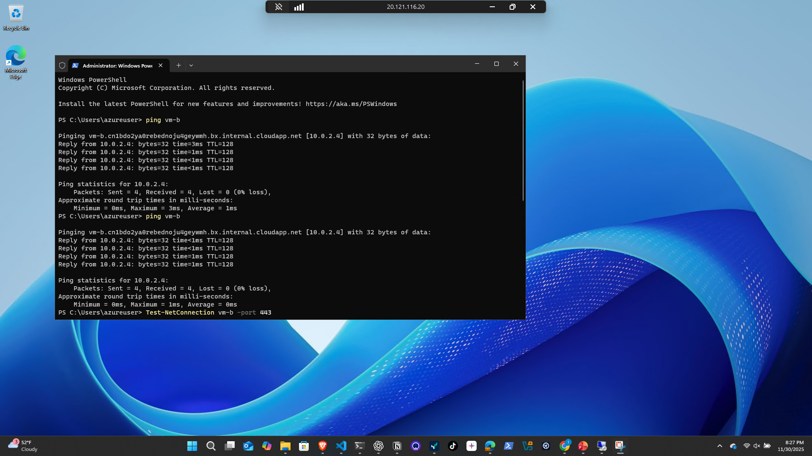
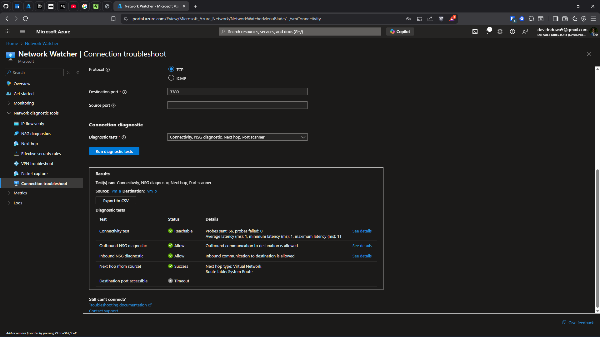
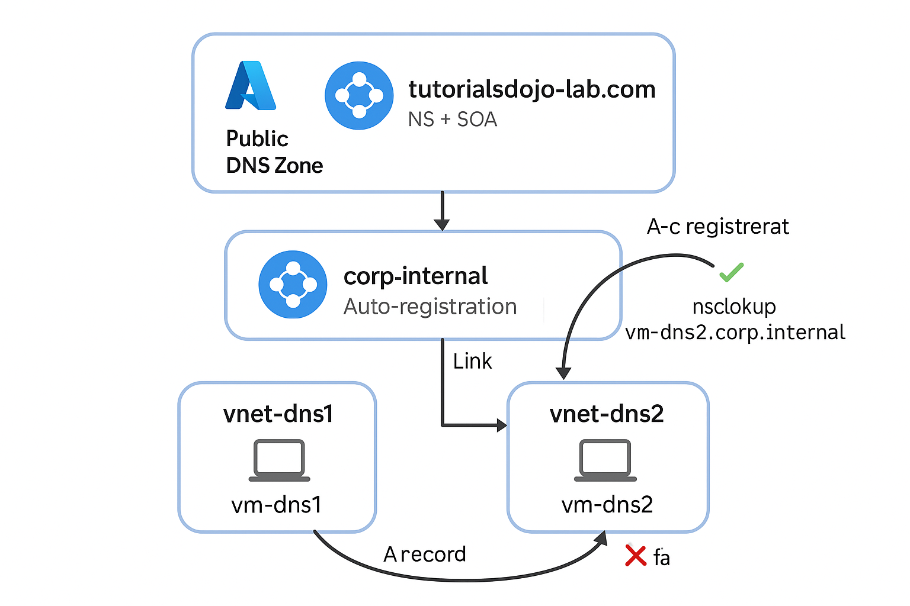
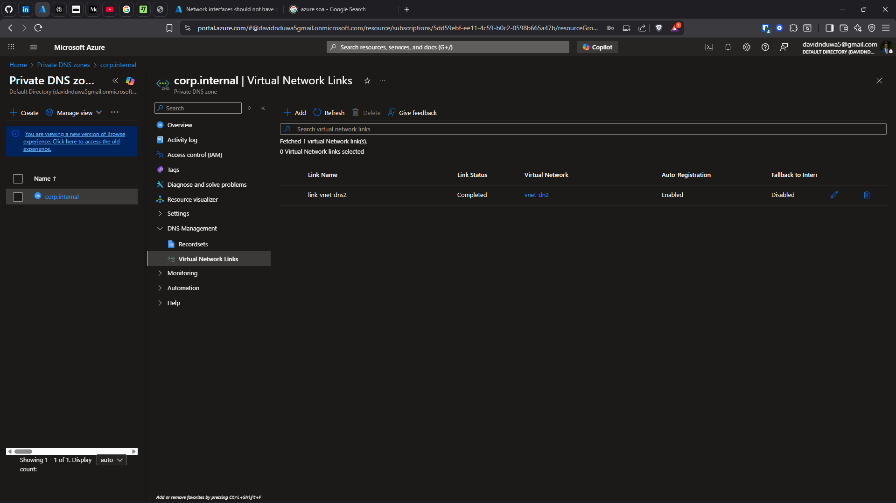
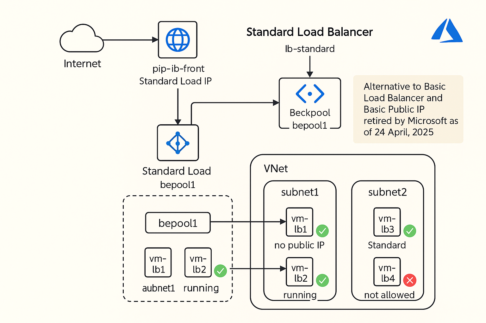
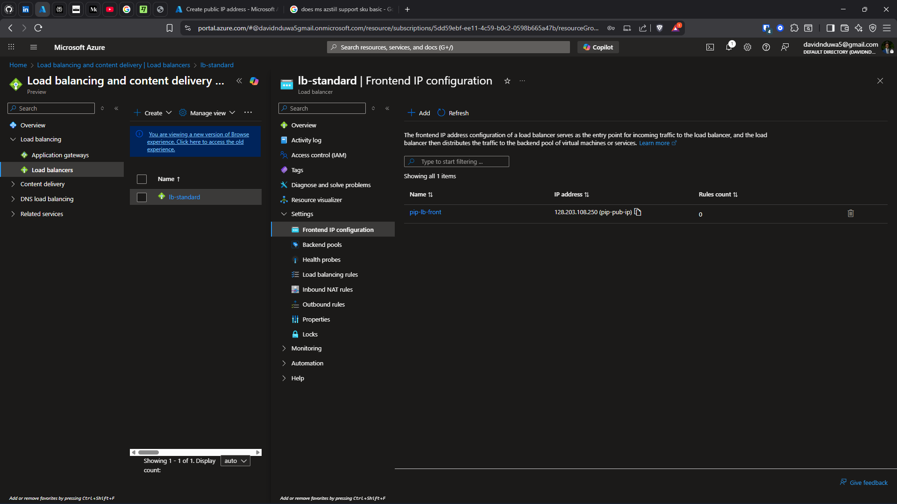
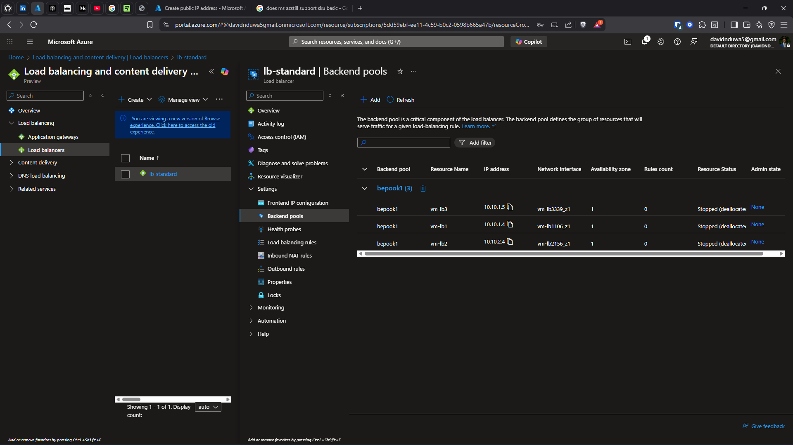

Problem
Azure networking involves multiple overlapping controls (NSGs, UDRs, DNS, peering). Misunderstanding rule priority or DNS resolution causes connectivity failures that are difficult to troubleshoot without systematic testing.
Architecture
Multi-subnet VNets with NSGs at subnet and NIC level. Public and Private DNS zones with VNet linking. Standard Load Balancer with backend pools and health probes. Network Watcher for connectivity validation.

Nsg B Association

Overlaping Deny

Ping

Tcp
Implementation
- NSG rule priority testing (Allow vs Deny precedence across 5+ scenarios)
- VNet peering: overlap vs non-overlap testing with CIDR validation
- Standard Load Balancer with backend pool and health probes
- Public DNS zone with NS/SOA records for external resolution
- Private DNS zone with A records and VNet links for internal resolution
- Network Watcher connectivity checks and IP flow verify

Diagram

Public Dns Zone Overview

Private Dns Zone

Vnet Links
Validation
- NSG priority confirmed: lower number wins (deny at 100 beats allow at 200)
- CIDR overlap constraints identified during peering setup
- Backend pool routing verified with health probe monitoring
- nslookup from VM resolved private DNS records successfully
- Public DNS records resolving externally
- Test-Connection confirmed port-specific TCP access

Lab 1 Diagram

Frontend Ip

Backednpool
Quantified Outcomes
- Validated rule precedence across 5+ test scenarios
- Identified CIDR overlap constraints preventing peering
- Confirmed backend pool routing functionality end-to-end
- DNS resolution validated for both public and private zones
Failure Scenarios Tested
- Blocked required NSG port → validated deny precedence
- Overlapping CIDR ranges → peering creation blocked
- Removed VNet link from Private DNS → internal resolution failed
- Stopped backend VM → health probe removed from rotation
- Created Private Endpoint without DNS Zone link → connection failed despite NSG allow
Operational Considerations
- In production: use Application Security Groups for rule management at scale
- Implement NSG flow logs for continuous traffic analysis
- Use Azure DNS Private Resolver for hybrid DNS scenarios
- Standard LB requires explicit outbound rules (no default SNAT)
- Network Watcher should be enabled in every active region
Lessons Learned
- Always check effective routes and effective security rules before troubleshooting
- DNS resolution failures are the #1 cause of Private Endpoint issues
- NSG evaluation: platform rules → deny → allow → default deny
- Standard LB is zone-redundant by default; Basic is not
Business Impact
Established systematic network testing methodology applicable to any Azure environment. Demonstrated ability to troubleshoot complex multi-layer connectivity issues.